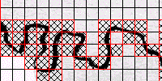
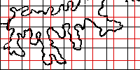

| Manual box-counting: cover the picture with grids, count the boxes, find the exponent of the scaling relation. |  |
| Computer box-counting: Same concept as manual box-counting, but the computer does most of the work. | |
| Grid placement: how altering the placement of the grid can affect the first few levels of box-counting. |  |
Return to Dimension by Box-Counting.